LECHE FLAN
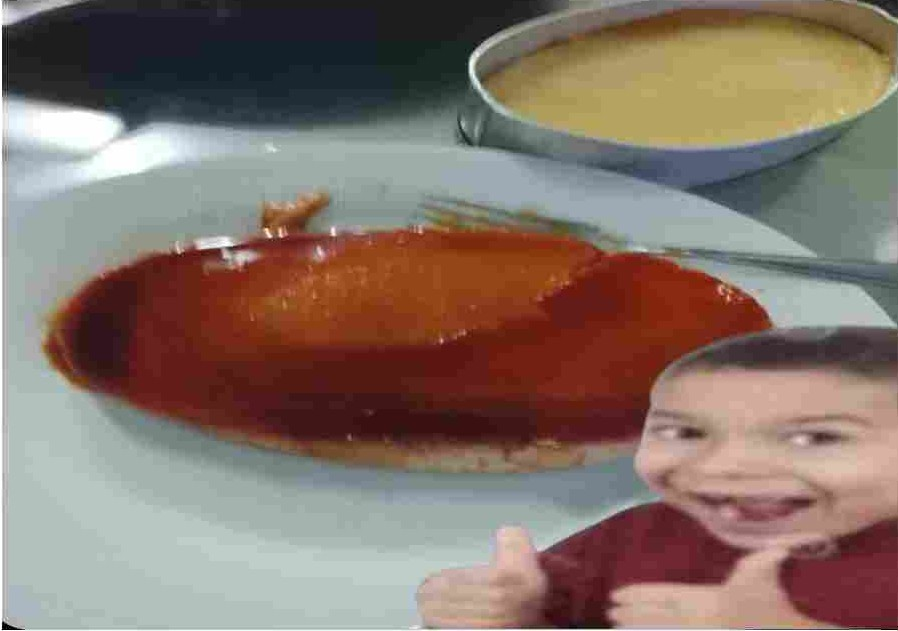
Ingredients
- 10 egg yolks
- 2 can sweetened condensed milk
- 1 can evaporated milk
- 1 cup granulated sugar
- 1 tsp vanilla extract
Instructions
Step 1: Prepare the eggs
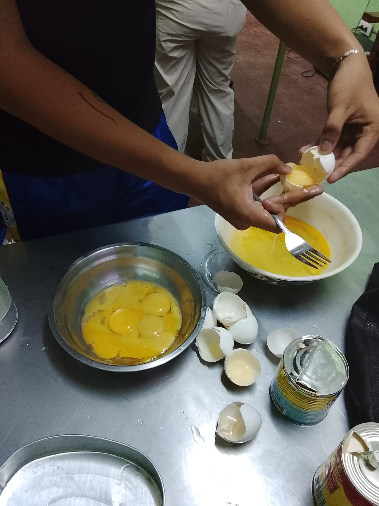- Prepare the eggs by separating the yolks from the whites.
- Only the yolks are needed.
Step 2: Make the caramel
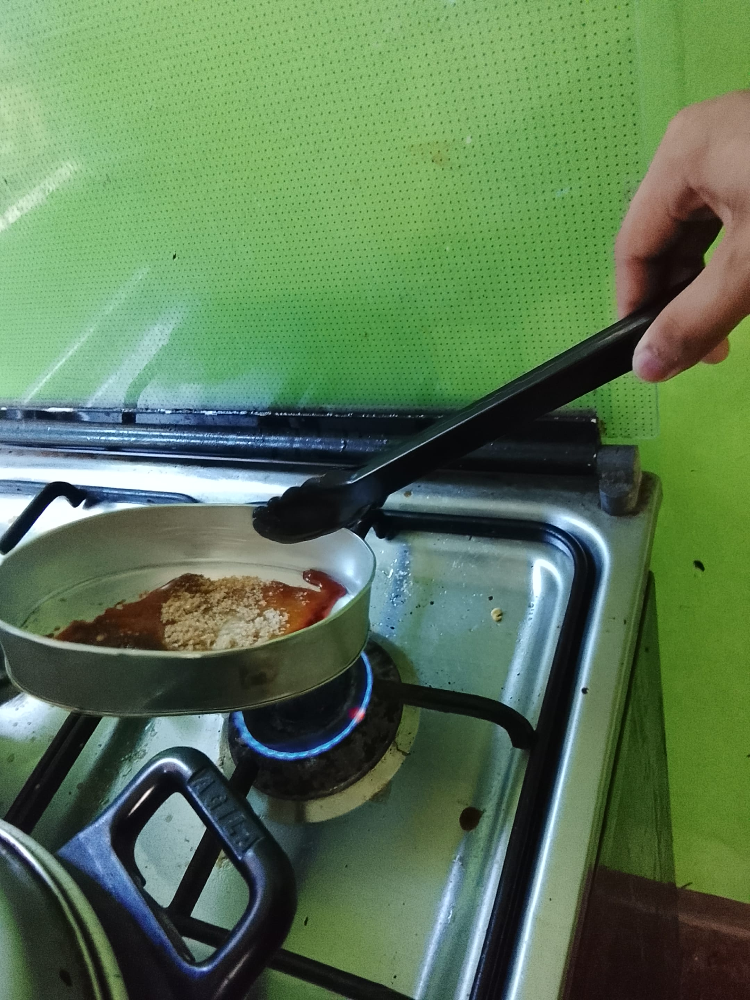 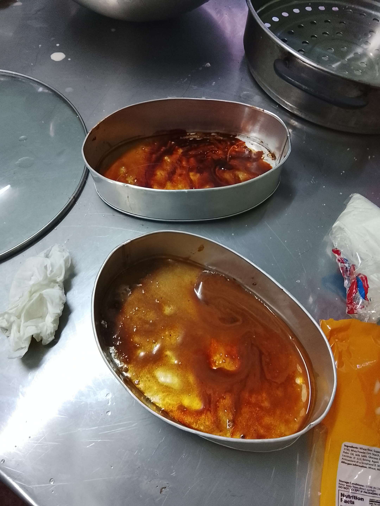- In a saucepan, melt the sugar over medium heat until it turns golden brown.
- Carefully pour the caramel into a flan mold, tilting to coat the bottom evenly. Set aside to cool and harden.
Step 3: Prepare the flan mixture
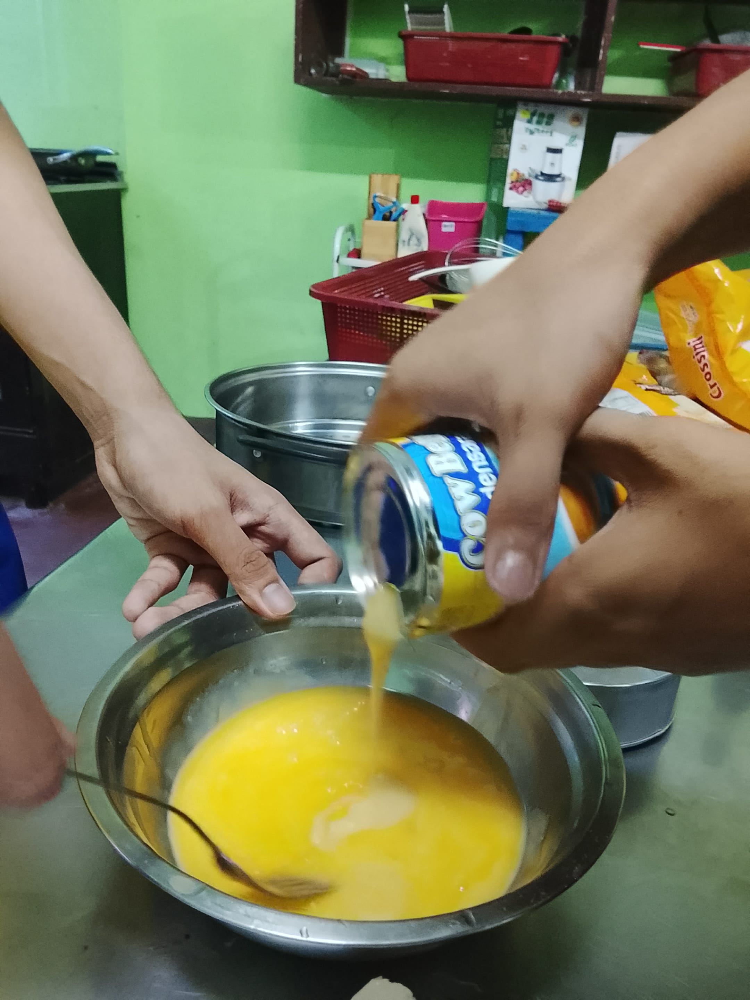 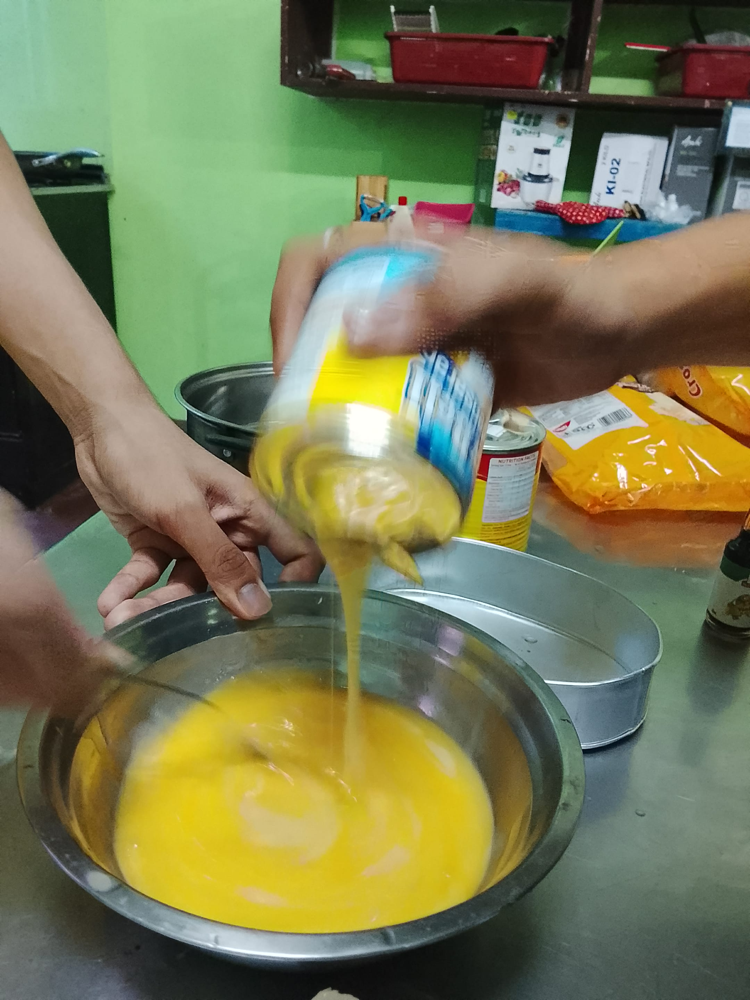 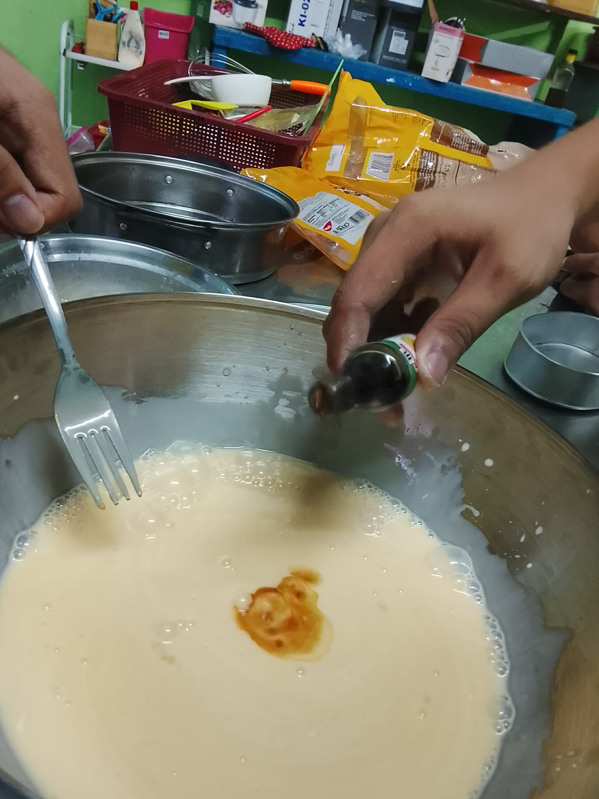- In a mixing bowl, combine the egg yolks, sweetened condensed milk, evaporated milk, and vanilla extract.
- Whisk until smooth and well combined.
Step 4: Strain the flan mixture
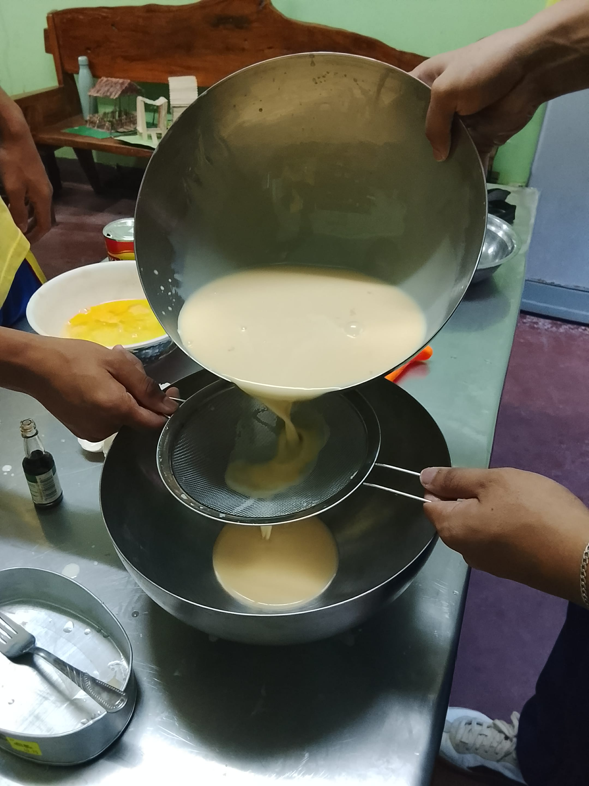 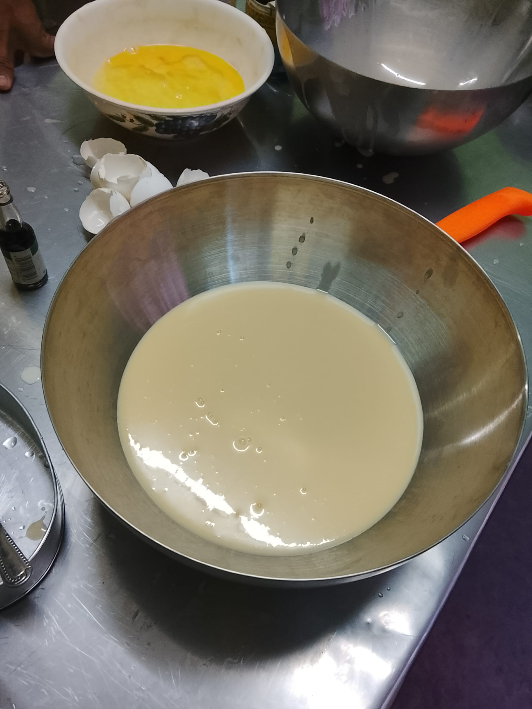- Strain the mixture through a wire sieve to remove any solids.
Step 5: Pour the mixture into the mold
- Pour the strained flan mixture into the caramel-coated mold.
Step 6: Bake the flan
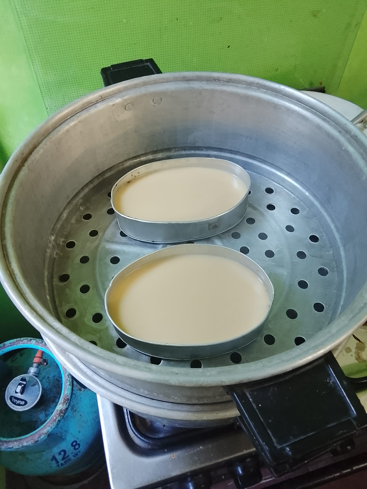 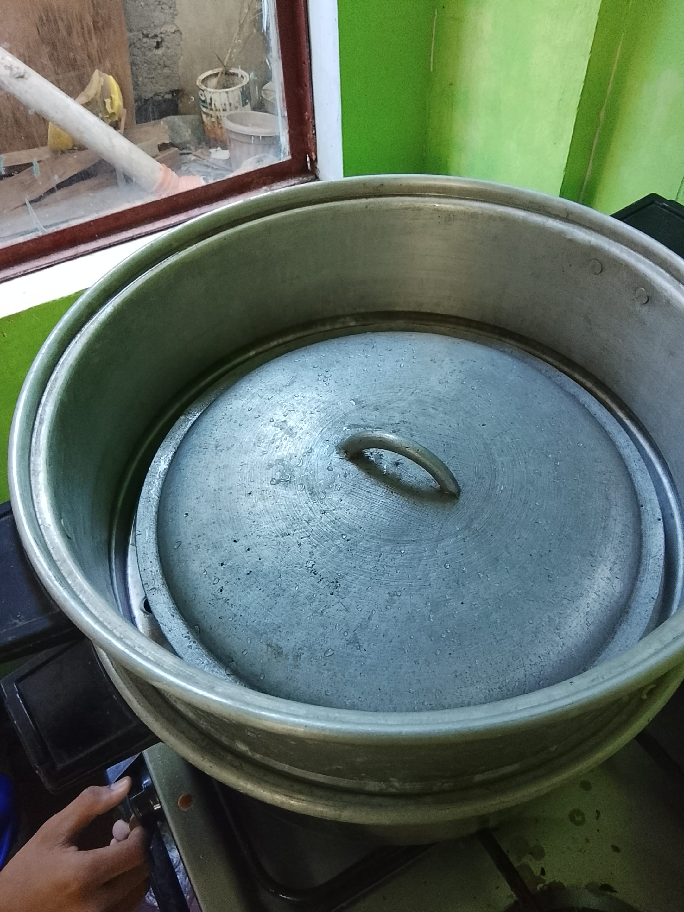 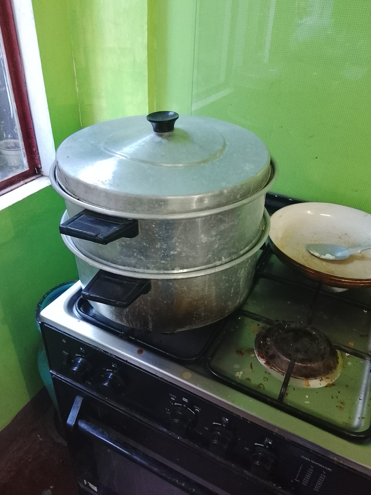- Place the flan mold in a larger baking dish and fill the dish with hot water halfway up the sides of the mold (water bath).
- Bake for about 50-60 minutes, or until a knife inserted in the center comes out clean.
*A lid was used in place of foil
Step 7: Cool and refrigerate
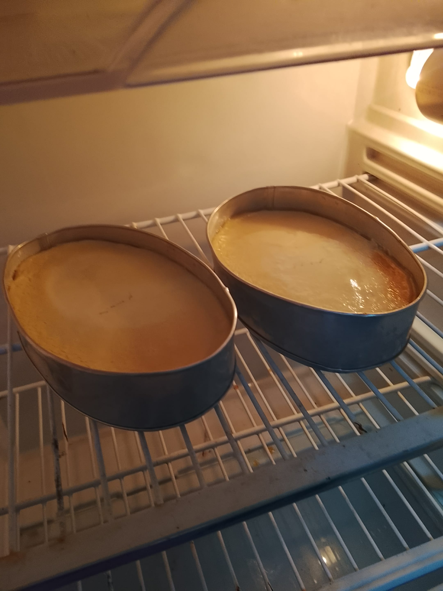- Remove the flan from the oven and let it cool to room temperature.
- Refrigerate for at least 2 hours or overnight.
Step 8: Serve the flan
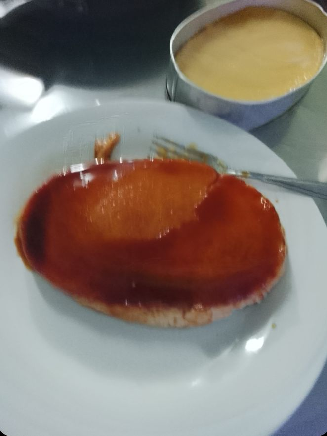- Serve the flan warm or at room temperature.
PT IN TLE/COMPUTER
Recipe and Images by: Venhz & Sean